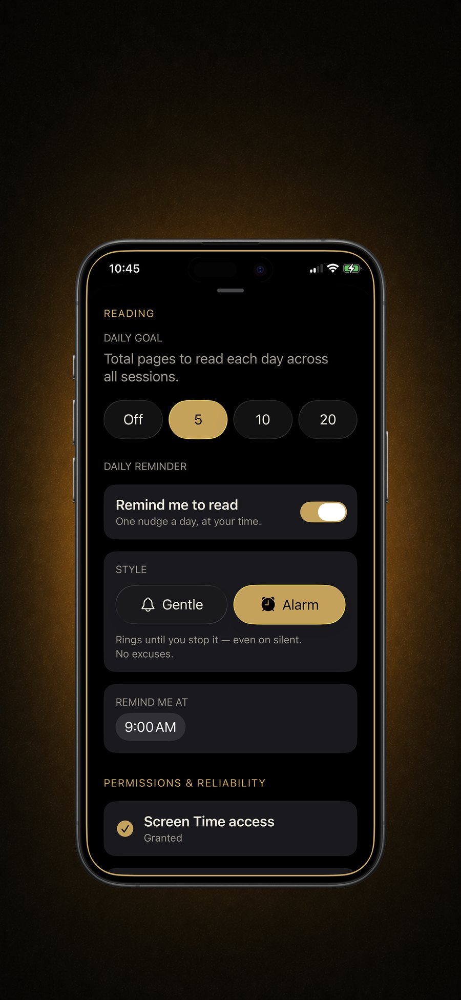

The built-in options (and their escape hatches)
Screen Time app limits
Settings → Screen Time → App Limits lets you cap daily usage per app. It works — until the limit hits and iOS offers "Ignore Limit → One More Minute / Remind Me in 15 / Ignore For Today." A blocking system with a built-in ignore button isn't a wall; it's a suggestion. Most people tap through it within the week.
Focus modes
Focus can silence apps and hide home screens on a schedule. Good for notifications, weak for compulsion: the apps are still there, one search away, and turning the whole mode off takes two taps.
Downtime
Downtime blocks nearly everything at set hours — often too blunt (it catches apps you legitimately need) and, again, dismissible by design.
Apple's tools assume the problem is forgetting. The actual problem is wanting.
What a block needs to hold
- An unlock that costs real engagement — not waiting (free), not tapping ignore (free), but an act that takes over your attention.
- A payoff on the other side — pure denial builds resentment, and resentment uninstalls blockers. The toll should leave you better off than the scroll would have.
- A no-negotiation option — for the hours you trust yourself least, the escape hatch must not exist at all.
Blocking apps with Block&Read, step by step
- Install Block&Read (free) and open it.
- Grant the Screen Time permission when prompted — this is what lets the app intercept your chosen apps. It's Apple's own framework: nothing about your usage leaves the device.
- Pick your apps — up to two free, unlimited with Premium. Choose by damage, not by number: your top two time sinks cover most of the bleeding.
- Set the daily reading goal — a page or two to start. From now on, opening a blocked app opens your book instead; hitting the goal unlocks everything for the day.
- Enable Strict Mode if you mean it — no dismiss, no timer, no override. The pages are the only key.
- (Premium) Add schedules — block only during work hours, evenings, or whenever your weak windows are.
Why this block holds when the others don't
- The unlock is engagement, not patience: you can't wait it out — you read your way out.
- The toll pays you back: every bypass attempt adds pages to your streak. The system converts your weakness into your reading list.
- Strict Mode removes the negotiation that kills Screen Time limits.
- Private by design: no accounts, no analytics — the blocker never phones home.

Block the apps. Keep them blocked.
Free to download · No ads, no accounts, no tracking
Get Block&Read